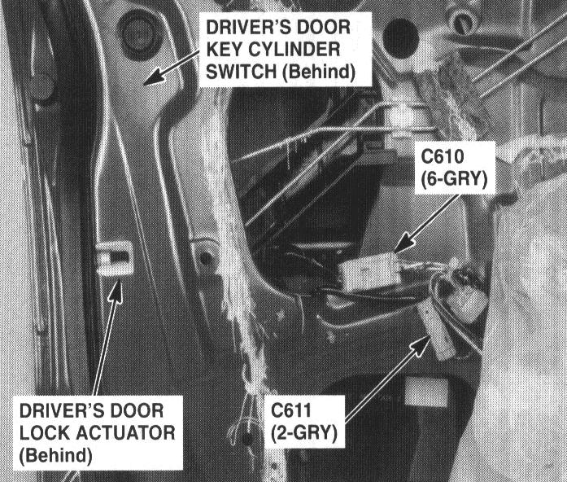

Operation CHARM
: Car repair manuals for everyone.
Home
>>
Acura
>>
1995
>>
Integra (RS, LS) L4-1834cc 1.8L DOHC PFI
>>
Repair and Diagnosis
>>
Accessories and Optional Equipment
>>
Antitheft and Alarm Systems
>>
Lock Cylinder Switch
>>
Locations
>>
Driver's Door Key Cylinder Switch
Driver's Door Key Cylinder Switch
85. Rear of Driver's Door:

Rear Of Driver's Door